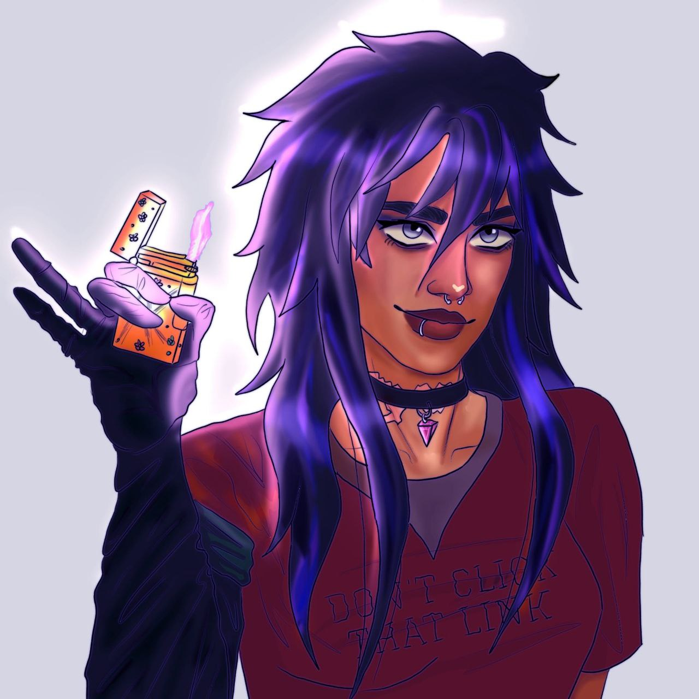
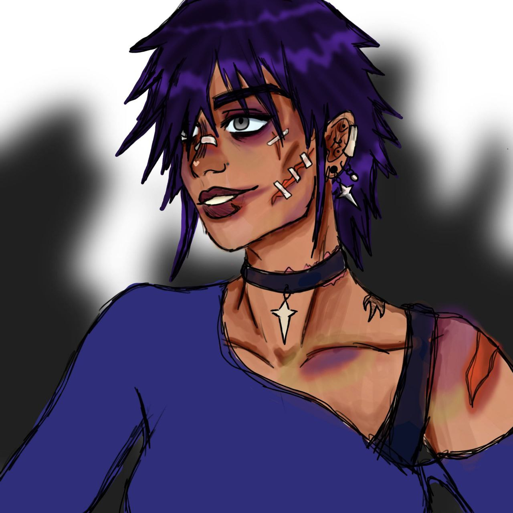
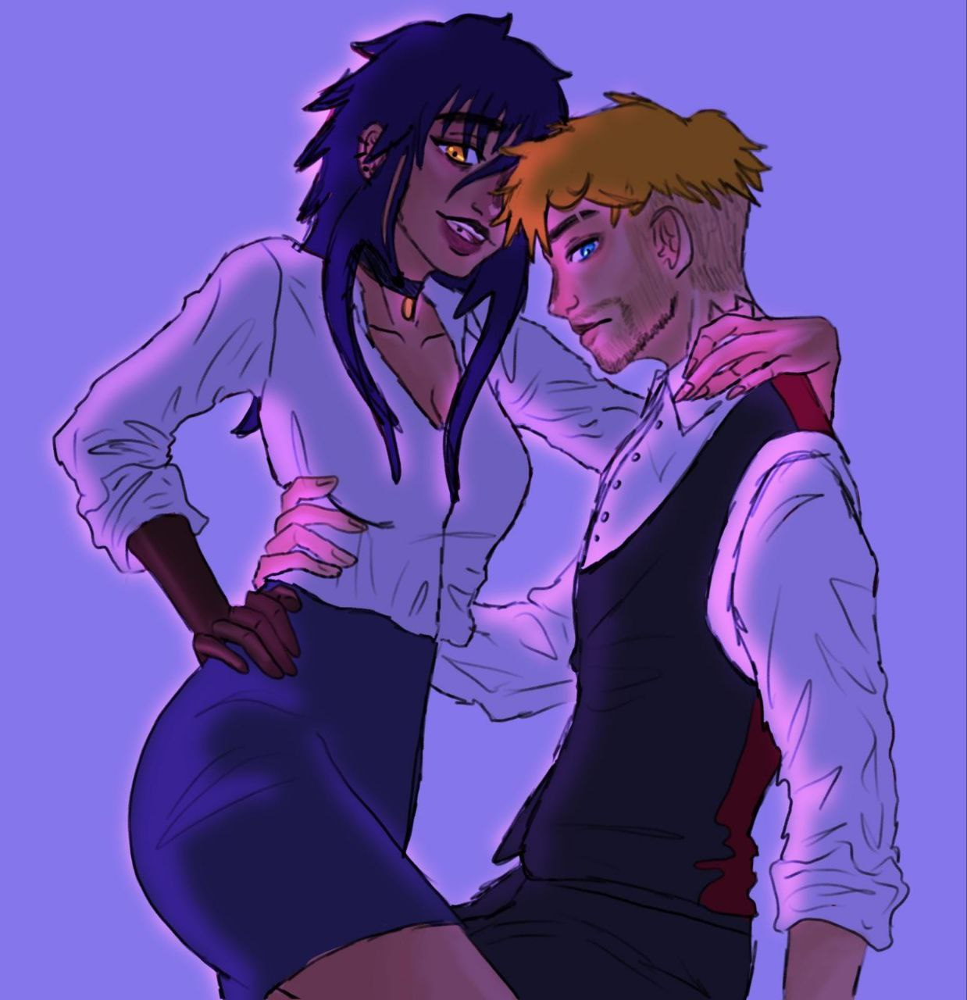

-
Su nombre completo es Ella Rose Castelli.
-
Forma parte de la Casa Nostra
- A los 15 años toma el puesto de Don.
- Su padre era muy amigo del padre de Suho.
- Una vez entra como Don, su consejero empieza a intentar manipularla, pero Rosie lo
acaba echando.
- Su nueva consejera es Katarina.
-
Sus padres no la querían y la tuvieron para arreglar su matrimonio.
-
Tiene traumas con su madre.
-
Su padre murió en frente de ella y se culpa a sí misma.
-
Su poder es controlar el clima.
-
Carlo:
- Al principio se llevaban mal.
- Con el tormenta incident se empezaron a acercar, luego befos y ya finalmente juntis.
- Tiene el poder de controlar la naturaleza, aunque no la puede crear.


